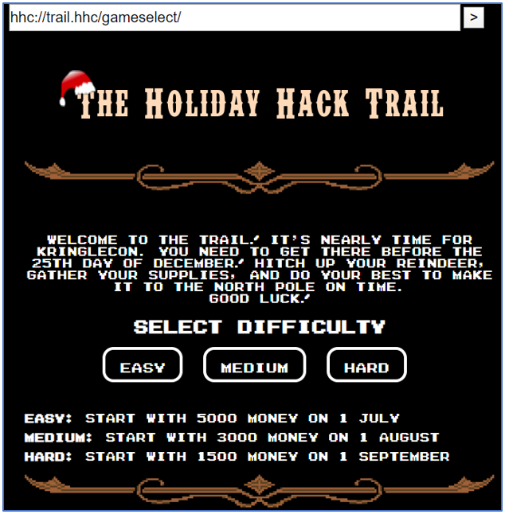
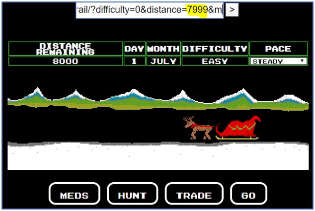
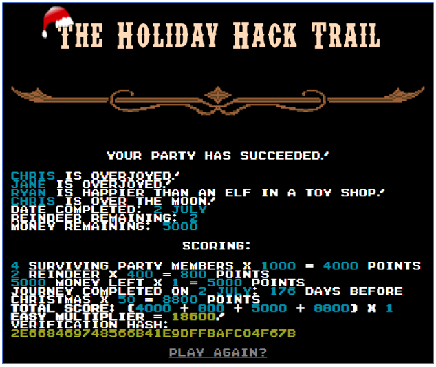
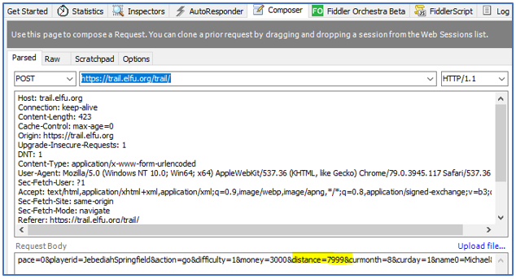
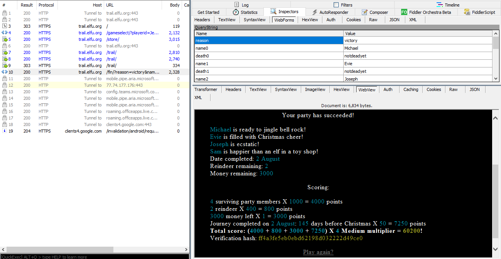
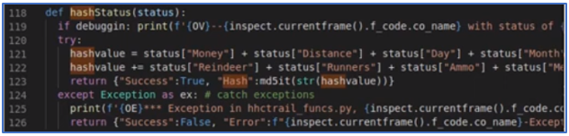
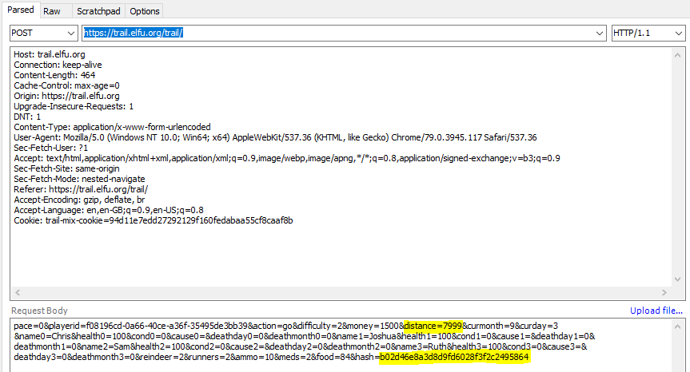
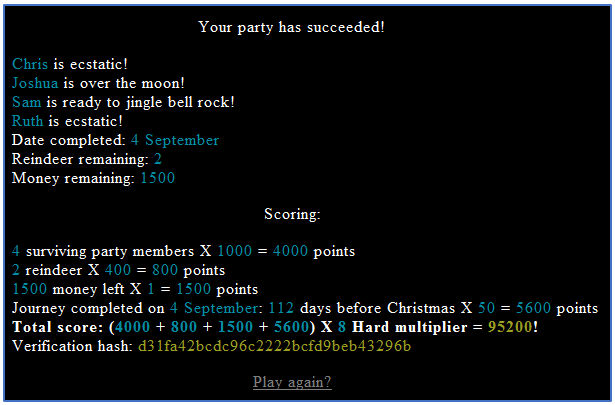

Holiday Hack Trail¶
Challenge¶
The initial dialog with Minty Candycane:
Minty Candycane Hi! I'm Minty Candycane! I just LOVE this old game! I found it on a 5 1/4" floppy in the attic. You should give it a go! If you get stuck at all, check out this year's talks. One is about web application penetration testing. Good luck, and don't get dysentery!
The hint from our badge:
Web App Pen Testing From: Minty Candycane Web Apps: A Trailhead
The banner page from the terminal challenge:
Solution¶
The objective of the challenge is easy - win the game (even by cheating)!
Comments within the source of the initial web page indicate that the game is using different protections for each difficulty mode:
Easy - possibly vulnerable to URL param manipulation
Medium - params moved to body of POST request
Hard - add hash integrity to ensure there’s NO cheating!
We anticipated that most people would have chosen the Burp Suite to solve this challenge. However, it’s always good to try something different so our solution is based on the Fiddler tool by Telerik.
Easy Mode¶
To win in Easy mode you simply need to modify the distance value within the in-game URL after the game has started. Change the distance to 7999 as shown in the following image then press ENTER.
Click on the Go button to win. You should see something like the following winners screen:
Medium Mode¶
For medium mode we decided to utilise the Fiddler tool.
Ensure you have Fiddler set up to capture and inspect HTTPS sessions.
Start the game in medium mode in the browser, click the Buy button on the store and then click on the Go button once.
Drag the request into the Fiddler composer tab and modify the distance value in the Request Body. Give distance a value of 7999 as shown in the following image.
Following this, hit the Execute button in the Fiddler Composer tab to win.
Note
If you get an error in Fiddler about a web-cache issue, then simply click on the Go button again within the game, then click on Execute within Fiddler.
Hard Mode¶
To win in hard mode we need to work out how the hash is generated.
As per the challenge hint, we payed special attention to Chris Elgee’s video. At approx 7:39 into the video, he talks about a backend hashing function and displays the following code snippet.
Based on this, and a bit of luck, we recreated our own hashing function (hht-hash.py). The code is reproduced below:
import hashlib
money=1500
distance=66
day=3
month=9
reindeer=2
runners=2
ammo=10
meds=2
food=84
hash="2cb6b10338a7fc4117a80da24b582060"
hashvalue = money + distance + day + month
hashvalue += reindeer + runners + ammo + meds + food
def md5it(x):
m = hashlib.md5(x.encode())
return m.hexdigest()
print(md5it(str(hashvalue)) + " : Our HASH")
print(hash + " : Original HASH")
We used this tool together with the Fiddler Composer tab funtionality to win the game.
Start the game in hard mode in the browser, click the Buy button on the store and then click on the Go button once.
Drag the request into the Fiddler composer tab. From there, look at the request body and fill in the relevant details within the appropriate variables in hht-hash.py. The variables you need to copy include (money, distance, day, month, reindeer, runners, ammo,meds, food).
Run hht-hash.py once to ensure that hash values match. You should get something like the following output:
2cb6b10338a7fc4117a80da24b582060 : Our HASH
2cb6b10338a7fc4117a80da24b582060 : Original HASH
Modify the distance variable within hht-hash.py to read distance=7999, then run the script again. A new hash should be displayed as follows:
b02d46e8a3d8d9fd6028f3f2c2495864 : Our HASH
2cb6b10338a7fc4117a80da24b582060 : Original HASH
Modify the request body within Fiddler composer tab with the new values for distance and hash.
Note
In the above image we have added newline characters in the request body to make it readable. The actual request body should be one continuous line.
Following this, hit the Execute button in the Composer tab to win.
Note
If you get an error in Fiddler about a web-cache issue, then simply click on the Go button again within the game, then click on Execute within Fiddler.
Hints¶
Minty Candycane provides the following hint in her dialog after solving the terminal challenge:
Minty Candycane You made it - congrats! Have you played with the key grinder in my room? Check it out! It turns out: if you have a good image of a key, you can physically copy it. Maybe you'll see someone hopping around with a key here on campus. Sometimes you can find it in the Network tab of the browser console.
The following hints were unlocked in our badge:
Bitting Templates From: Minty Candycane Deviant's Key Decoding Templates
Key Bitting From: Minty Candycane Optical Decoding of Keys